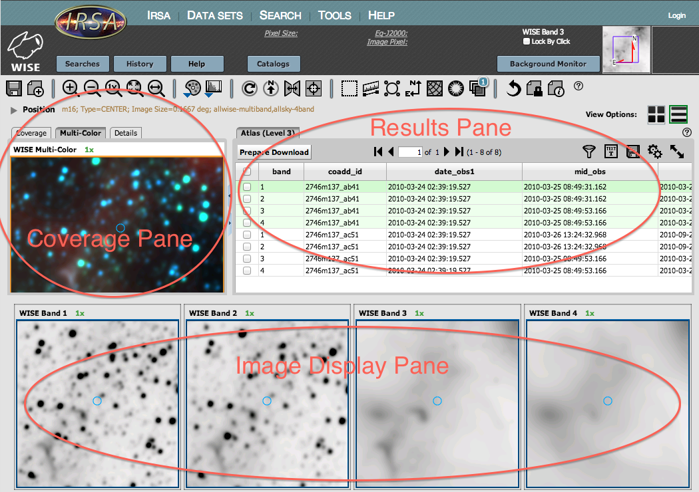
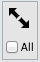
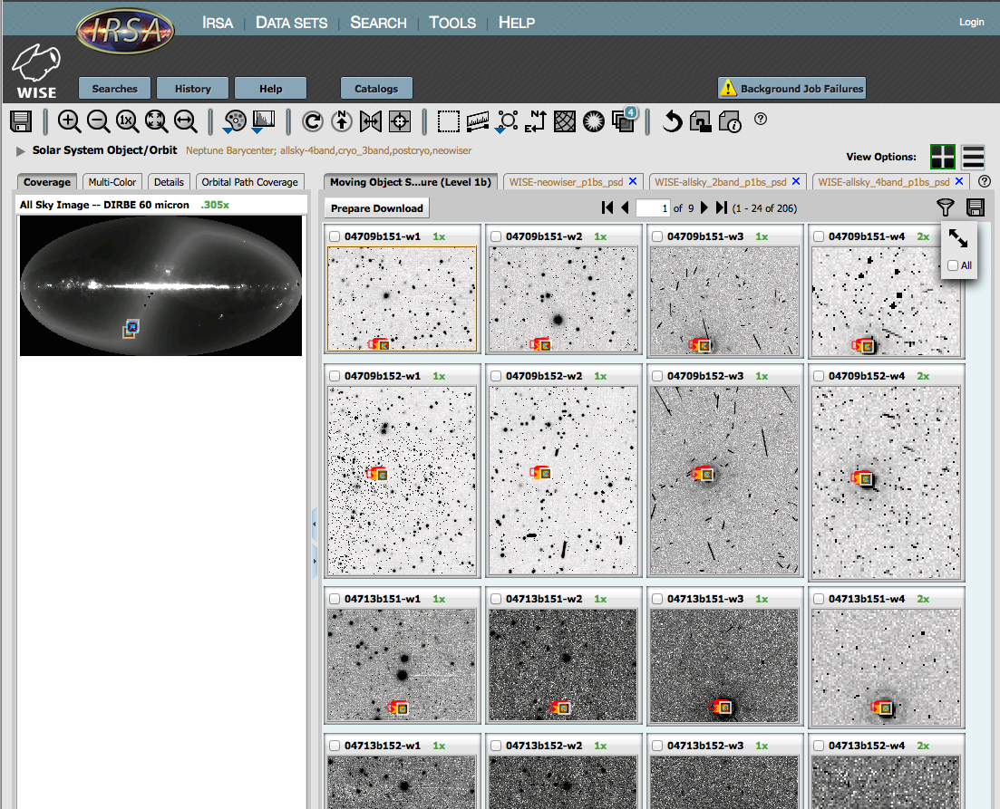
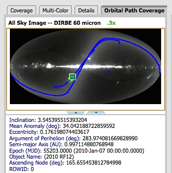
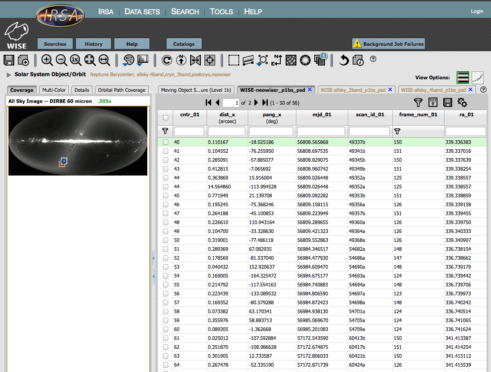

Understanding Your Search Results from the IRSA/WISE Image Service
This page provides an overview of the information that is returned
during an IRSA/WISE Image Service search.
Contents of page/chapter:
+Terminology
+Options Common to Most Search Results
+Position Search Results
+Columns: Level 1b -- Single Frame (Exposure) Images
+Columns: Level 3 -- Coadded Atlas Images
+Solar System Search Results
+Columns: Solar System Search -- Solar System search specific column entries
+Filtering -- Imposing additional filters to get the
most out of your search results
+Visualization
Terminology
WISE obtained images at wavelengths of 3.4, 4.6, 12, and 22 microns
(also referred to as W1, W2, W3, and W4, respectively) with spatial
resolution ranging from 6 arcseconds at the shortest wavelength to 12
arcseconds at the longest.
Individual exposure WISE images are assembled into Atlas tiles 1.564
degrees on a side. The WISE image server does not re-mosaic these
tiles. The degree of overlap between tiles is a function of
declination. You can obtain all Atlas tiles on which your object
appears, or individual exposures. Atlas tiles have point source
profiles whose full width at half max (FWHM) is sqrt(2) times larger
than the native (single-exposure) values. (See Explanatory Supplement
for more details.)
Various sets of WISE images and corresponding catalog data are
available for download. Please consult the corresponding Explanatory
Supplement for the data set you choose to use.
Search results are displayed in your browser in several sub-windows,
sometimes referred to as "panes", like "window panes." Here is an
example:

Options Common to Most Search Results
- Dynamic changes
- Clicking on things in one pane often changes things in another
pane. For example, clicking on a row in the search results pane
changes the polygon that is highlighted in the coverage pane, and the
content of the details tab in the coverage pane. For searches that
return more than one image set, clicking on any of the rows in the
search results pane corresponding to a given image set changes what
images are displayed in the image display pane on the bottom of the
screen. The image set that is shown is highlighted in green in the
list. If catalogs are overlaid, similar interactivity is available --
clicking on a row in the catalog changes the source color in the
source overlays on all of the images, and clicking on a source overlay
in any of the images highlights the corresponding row in the
catalog.
- Images
- Move your mouse over any image that is loaded into the viewer.
Details about the image and, specifically, the pixel beneath your
mouse cursor, appear along the top of the window with a variety of
useful items. Much more information about working with images is
provided in the Visualization
section.
- Coverage
- The WISE Image Atlas covers the sky in discrete tiles of coadded
single exposure images that are 1.564 x 1.564 degrees in size. For a
single target positional search, when the Atlas tab is selected in the
search results pane, the coverage tab in the coverage pane displays
the footprint of the atlas tiles containing the search target overlaid
on an IRAS 100 micron image. If the Single Exposure (Level 1b) tab is
selected, or you are looking at results of a Solar System Object
search, correspondingly the footprints of each of the returned single
exposure images are shown on the IRAS 100 um image.
For a multi-object search, the coverage tab indicates the positions
of the input targets overlaid on an All-Sky DIRBE 60 micron
image.
This pane also has a 3-color image of your search region.
- Changing the size of the window or columns
- You can resize the boundary between window panes to resize
the window pane or individual columns. Click and drag the blue
double-sided arrows in the middle of the pane boundary. You can resize
columns by dragging the boundary between columns.
- Distinguishing image sets
- If you selected multiple image sets and set "Return only the most
centered image containing the target" to no in your initial search,
you may get multiple results from multiple releases. There are two
ways to distinguish them quickly. The "image_set" column (all the way
on the right) is 2 for 2-band, 3 for 3-band, 4 for 4-band (cryo), 5
for AllWISE, and 6 for NEOWISE Reactivation (2-band). The coadd_id
also has this information - the first 8 characters is the tile
position, and the 4 characters after the underscore refers to the
processing iteration. *_ab31 is 3-channel, *_ab41 is 4-channel, *_ac51
is AllWISE. You can also look at the FITS header in one of the images
using the Visualization tools -
nearly all the data were taken in 2010 but AllWISE was processed in
2013, so the file creation date should be in 2013 for AllWISE.
- Table Navigation
- The table shows you the first 50 results. If you have more than 50
results (uncommon here!), you can scroll through the list using the
black arrows.
- Changing the number of rows
- By default, 50 rows are returned per page; more or fewer rows can
be displayed by changing the Page Size number in the "Edit Table
Options" menu
 , or by changing the
Table Page Size entry in the Preferences tab. You can scroll through
search results pages by the arrows in the middle of the results table
tab header. Do you have too many rows? Further restrict the search
by imposing additional filtering.
, or by changing the
Table Page Size entry in the Preferences tab. You can scroll through
search results pages by the arrows in the middle of the results table
tab header. Do you have too many rows? Further restrict the search
by imposing additional filtering.
- Adding/removing/sorting by columns
- Several columns of information on each data set are automatically
displayed in each of these tabs by default. Additional columns can be
added/removed by clicking on the "Table Options" Icon on the far upper
right corner of the results pane .
Lists of the available columns are below.
- Filtering
- Filters can be added interactively to lists of images (or a
catalog) via selecting this icon:
 -- see Filtering for more information.
-- see Filtering for more information.
At any time, the search results can be sorted by clicking on any
column header's name. See Columns for
details on column definition. All column information is presented in
the "Details" tab in the coverage pane for the selected (highlighted
in green) observation.
- Maximizing a pane
- Any of the window panes can be enlarged to take up as much space
in the browser window as possible. Let your mouse hover over any pane,
and this icon
 will appear in the
upper right. Click on it to expand the pane. Select "Close" from the
upper left of the expanded view to return to the original view.
will appear in the
upper right. Click on it to expand the pane. Select "Close" from the
upper left of the expanded view to return to the original view.
- View Options
- You can choose between "Table View" and "Grid View" (icons in the
top right corner of the results page: ) to display the search results.
"Table View" lists the available observations in table format in the
results pane and only displays the images associated with the
currently selected image set (highlighted in green in the results
pane table). Alternatively, "Grid View" simply displays all of the
images of the search results. Note that the artifact overlay is not
available in "Grid View", and only appears in the lower "image
display" pane. Note also that, in the "grid view", the "select all"
checkbox appears not on the top of a column, but in the upper right,
under the expand and image toolbox icons: 
- Saving the results
- The list of search results in the results pane (as opposed to the
data) can be saved to a text file by clicking the diskette icon or
viewed as a text file by clicking the "Text" icon.
- Downloading Data
- In order to download the WISE images, click on the checkbox to the
left of the entry you want to download, or click on the checkbox on
the top of the column of checkboxes to 'select all.' Then click on the
"Prepare Download" button at the top of the column. A pop-up appears
to ask you exactly what data you would like packaged. After you select
your choices, the Background
Monitor is launched to prepare your data for download. When your
packaged data are ready, open the Background Monitor, and click on the
link to save your data to disk.
Note that you control where the data are saved on your disk
through your browser; your browser may be configured to store all
downloads in a particular location on your disk. Look for a
"Downloads" or "Recently modified files" folder.
To uncompress the downloaded data, double-click on the file, and your
computer should know what to do with it. It will uncompress into a
bundle of directories.
Position Search Results
After a position search, the results
pane in the browser window will contain one or two tabs depending on
the image data requested: Atlas (Level 3) coadded images and/or Single
Exposure (Level 1b) images. Clicking on the tab reveals a table with
one row for each of the images which fulfills your search criteria.
Note that there will be a separate table entry for each WISE band, so,
unless you constrained it to show only some of the bands, or only some
images are available in the first place, the total number of images in
the table will be four times the number of WISE framesets or coadds
available for the queried region. Columns provide basic image
information, such as band, frame/scan/coadd identification, magnitude
zero point, number of frames (coadd only), time since anneal
(dtanneal), etc. In addition to the preselected subset of default
columns, all available information on a given image can be accessed
under the "Details" tab of the coverage pane.
Do you have "too many rows"? Further restrict the search by imposing
additional filtering; see below!
Columns: Level 1b -- Single Frames
Level 1b refers to WISE individual frames, which are the single
exposures from which the WISE survey was constructed.
A complete list of columns returned for Level 1b searches follows;
only the most commonly used columns are displayed by default, but
these can be added to the display by clicking on the gears icon in the
top right of the table:
-
in_row_id - running number of rows in input search table
in_id - user specified search (input) target id
in_ra - user specified search (input) RA
in_dec - user specified search (input) DEC
band - WISE band number; 1 (3.4 microns), 2 (4.6 microns), 3 (12 microns), 4 (22 microns)
crval1 - Image Center RA J2000 position (note this is the image center of the original exposure, not the specified cutout)
crval2 - Image Center DEC J2000 position
ra1 and dec1 - RA,DEC J2000 position of bottom left corner of image
ra2 and dec2 - RA,DEC J2000 position of bottom right corner of image
ra3 and dec3 - RA,DEC J2000 position of top right corner of image
ra4 and dec4 - RA,DEC J2000 position of top left corner of image
magzp - relative photometric zero point magnitude
magzpunc - 1-sigma uncertainty in magzp
modeint - mode of pixel DN in frame within lowest sigma partition
scan_id - identification of pole-to-pole orbit scan for observation
scangrp - scan group id
frame_num - frame number in scan
date_obs - date and time of mid-point of frame observation, UTC
mjd_obs - modified julian date of mid-point of frame observation, UTC
dtanneal - seconds since last anneal
utanneal - UT date of last anneal
exptime - frame exposure time (in seconds)
debgain - digital electronics box gain (e-/eff. slope units, Sample-Up-the-Ramp weights); changes post-cryo
febgain - flight electronics box gain for individ. non-destructively read samples in ramp; changes post-cryo
moon_sep - distance (in degrees) of frame center from moon
saa_sep - distance (in degrees) of frame center from SAA boundary
qual_scan - quality assessment of scan; 5 is typical, 10 highest
image_set - image set identification
Columns: Level 3 -- Atlas Images
Level 3 refers to WISE coadded atlas images which are constructed from
overlapping frames on the region of sky in question. Atlas images are
~1.5 degrees on a side. A complete list of columns returned for Level
3 searches follows; only the most commonly used columns are displayed
by default, but these can be added to the display by clicking on the
gears icon in the top right of the table:
-
in_row_id - running number of rows in input search table
in_id - user specified search (input) target id
in_ra - user specified search (input) RA
in_dec - user specified search (input) DEC
band - WISE band number; 1 (3.4 microns), 2 (4.6 microns), 3 (12 microns), 4 (22 microns)
crval1 - Image Center RA J2000 position (note this is the image center of the coadd tile, not the specified cutout)
crval2 - Image Center DEC J2000 position
ra1 and dec1 - RA,DEC J2000 position of bottom left corner of image
ra2 and dec2 - RA,DEC J2000 position of bottom right corner of image
ra3 and dec3 - RA,DEC J2000 position of top right corner of image
ra4 and dec4 - RA,DEC J2000 position of top left corner of image
magzp - relative photometric zero-point magnitude
magzpunc - 1-sigma uncertainty of magzp
coaddid - identification number of coadd tile
date_obs1 - Observation midpoint date/time (UTC) of earliest input frame used in coadd
mid_obs - Observation midpoint date/time (UTC) of median time-ordered input frame used in coadd
date_obs2 - Observation midpoint date/time (UTC) of latest input frame used in coadd
numfrms - number of image frames used to create coadd
image_set - image set identification
Solar System Search Results
The output of the Solar System Object/Orbit search is similar to
the positional WISE image search results, but the table of results is
slightly different. Note that the results of the Solar System search
are by default displayed in "Grid View". Here is an example of
results for a search on Neptune (its barycenter), over all times, for
all image sets (descriptions of items are below the screen shot):

Things to note about these results. Items of
particular interest to Solar System observers are highlighted in
italics.
- Image Previews in grid view
- The main portion of the search results is a pane with image
previews for Single Exposure (Level 1b). It calculated the positions
for your object, and these are the images for which it thinks include
your object at the time of observation. The predicted position is
indicated by a blue square on the image. An "x" symbol indicates the
predicted position of the input object in previous or subsequent image
sets. Clicking on any of the positions will highlight (in blue) all
the corresponding positions in the surrounding images.
- Coverage tab
- On the left hand side, there is a "Coverage" tab. This indicates
where the frames are that it found where your object should be. In
this example, Neptune has not moved very much.
- Multicolor tab
- As for searches on RA/Dec, this Multicolor tab (on the left hand
side) makes a 3-color image using the image you have selected. For
these kinds of searches, it's working with individual exposures, so
the 3-color image can look very messy.
- Details tab
- As for searches on RA/Dec, the Details tab gives you details about
the currently selected image.
- Orbital Path Coverage
- The Orbital Path
Coverage tab in the coverage pane displays the orbital path (blue
line) of the input object over the time range selected for the
search. The WISE coverage of the
orbital path is indicated by orange "x" symbols. In this example,
Neptune has not moved very much, but here is the path coverage for
2010 RF12:

- Downloading data
- Similar to other search results, rows of the table can be
selected by the checkboxes on the left and then downloaded using the
"Prepare Download" button.
- Changing to list view
- If you want to change to list view (rather than grid view), click
on the table grid view icon in the upper right:
- Background Job Failures in the Background Monitor
- Because of the relative amounts of sky coverage in each image set,
not all objects will appear in all image sets (or corresponding
catalogs). In this case, Neptune can be found in the All-Sky (4-band),
Post-Cryo (2-band), and NEOWISE-R, but not the 3-band Cryo.
This is what generated the error. That's ok, and expected, since those
observations did not include the portion of the sky where Neptune was
at those times.
- Catalog tabs
- In addition to the main search results, if you selected a catalog
search, you get an additional tab for each of the catalogs where it
found objects meeting your search criteria. (These catalogs are the
individual exposure catalogs.) For Neptune, one of those
tabs looks like this, below. Each row corresponds to one row from the
catalog. These objects are also plotted on the individual exposures.
(See the Visualization section for
more information on interacting with catalogs.)

Columns: Solar System Search Columns
The results of the Solar System search
are by default displayed in "Grid View". If you switch to "Table
View" (via the button in the top right of the search results), then
you can see the metadata associated with each image.
A complete list of columns returned for Solar System searches
follows; only the most commonly used columns are displayed by
default, but these can be added to the display by clicking on the
gears icon in the top right of the table:
-
ra_obj/dec_obj - The predicted RA and Dec of the object based upon the input orbital parameters and the observation date/time
sun_dist - The predicted distance from the Sun (in AU) of the object based upon the input orbital parameters and the observation date/time
geo_dist - The predicted distance from the Earth (in AU) of the object based upon the input orbital parameters and the observation date/time
dist_ctr - The distance of the predicted object position within the Single Exposure image from the center of that image. Thus, if the predicted object position is far from the object center it is possible that small differences in orbital parameter could have caused a different image to be selected.
phase -
vmag - The total visual magnitude of the object based on its relative orbit parameters and observation date/time. This parameter is null (99.99) for Manual Input searches.
crpix1 and 2 -
crval1 and 2 -
equinox - Equinox of the World Coordinate System of returned position (usually J2000.0)
ra1 and dec1 - RA,DEC J2000 position of bottom left corner of image
ra2 and dec2 - RA,DEC J2000 position of bottom right corner of image
ra3 and dec3 - RA,DEC J2000 position of top right corner of image
ra4 and dec4 - RA,DEC J2000 position of top left corner of image
scan_id: The WISE scan_id of the returned image,which provides identification of pole-to-pole orbit scan for observation
frame_num: The WISE frame_num of the returned image, which indicates identification of frame number within a given scan.
band - The WISE band of the image (1-4)
date_obs: UT observation date in standard format date-hms
mjd_obs: julian date of observation midpoint
dtanneal - seconds since last anneal
moon_sep - distance (in degrees) of frame center from moon
saa_sep - distance (in degrees) of frame center from SAA boundary
qual_frame - quality assessment of frame; 5 is typical, 10 highest
image_set - image set identification
Filters
Filters are a very powerful way of constraining what is shown in a
list form, either a list of search results or a catalog. This icon
represents a filter: Click on this icon to
enable filters. A text entry box appears above each of the current
catalog columns, with a small version of the filter icon corresponding
to that row on the far left. You can type operators and values in
these boxes -- hit return after typing or click in another box to
implement the filter. For fields with a limited set of choices,
instead of a text entry box, a filter icon will appear; click on it to
select from the available choices. As an example, to show only those
sources with declination above a certain value (say, 31 degrees), type
"> 31" in the box above the "dec" column. Or, if you have retrieved
a WISE catalog and would like to only view the objects with a W1 (3.4
micron) profile-fitted magnitude less than 6 magnitudes, above the
'w1mpro' column, type "< 6" in the form.
After you impose a filter, then the number of rows in the catalog is
restricted according to the rules you have specified, and the
"filters" icon on the top right of the catalog pane has changed to
remind you that there has been a filter applied, in this case just one
filter:  . To clear the filters, click on
the cancel filters icon (which also appears after you impose filters):
. To clear the filters, click on
the cancel filters icon (which also appears after you impose filters):
 .
.
Note that the filters are logically "AND"ed together -- it will impose
this AND that AND this other restriction. You can relatively easily
restrict things such that no data are left; if that is the case, you
will get "There are no data to display." You can then cancel all the
filters at once via the cancel filters icon (), or remove them individually by hand by
editing the filter boxes at the top of each column, just as you did to
impose the filters.
The available logical operators are :
- = which means 'equal to' (exactly!), e.g., the parameter on
which you are querying (the column headers as shown) is exactly equal to
this value you are specifying.
- > which means 'greater than'
- < which mean 'less than'
- != which means 'not equal to' (exactly!)
- >= which means 'greater than or equal to'
- <= which means 'less than or equal to'
- IN which means 'included within this list', e.g., the
parameter on which you are querying (such as "Bandpass") is included
within the list you are specifying (if the column filter is free-form
text, type "value1,value2" and it will give you rows that have value1
or value2).
- LIKE which means 'resembles the text that is entered', e.g., the text
resembles the text that you type in the box.
There is more filtering discussion and examples in the Catalogs section.
Visualization
Following the positional search, all of the available WISE images of
the selected entry in the search results table will be displayed in
the lower portion (image display pane) of the browser window. The
search position is highlighted by a blue circle, typically centered in
each image. Note that there is a factor of two resolution change
between 3.4 and 22 microns. The FITS images themselves are what is
being displayed, and you can interact with these FITS images directly.
Please refer to the help section on Visualization for more information.